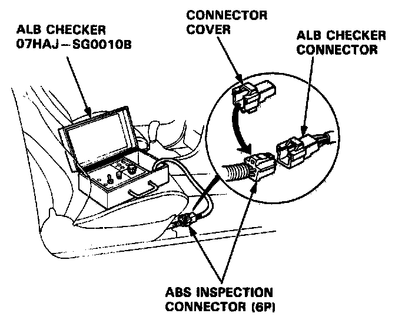
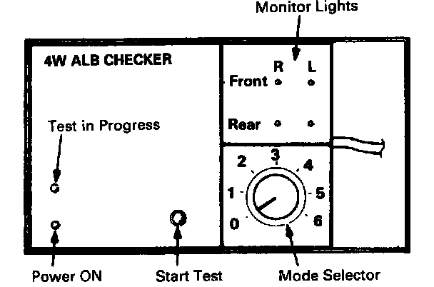
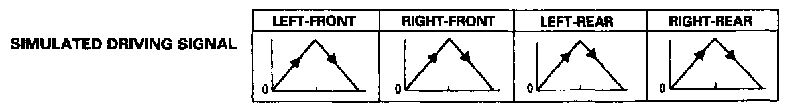
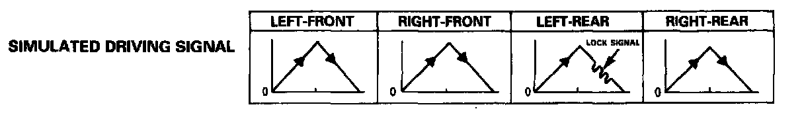
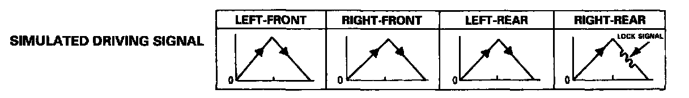
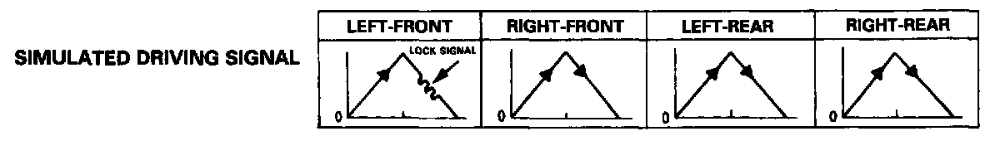
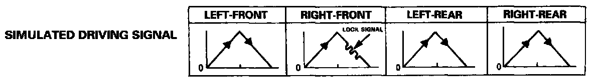

ABS Function Test
ABS Function Test1. Raise the car off the ground, and support it with safety stands.
2. Check that there is no brake drag.
3. Turn the ignition switch ON (II), and confirm that the ABS indicator light comes on.
- If the ABS indicator light does not come on, follow the troubleshooting under ABS indicator light does not come on.

4. With the ignition switch OFF, disconnect the ABS inspection connector (6P) from the connector cover located under the glove box, and connect it to the ALB checker. Continue with steps 5 through 11 of this procedure.
5. Shift the transmission to [P] position.
6. Start the engine and release the parking brake.

7. Turn the Mode Selector switch to "1".
8. Push the Start Test switch.
The ABS indicator light should not come on while the Test in Progress light is on.
- If the ABS indicator light comes on, confirm the DTC and perform the appropriate troubleshooting for the code.
Caution: Do not turn the Mode Selector switch when the Test in Progress light is on. Damage to the ALB checker can result.
9. Turn the Mode Selector switch to "2".
10. Depress the brake pedal firmly, and push the Start Test switch. The ABS indicator light should not come on while the Test in Progress light is on. There should be kickback on the brake pedal.
Have the assistant check that the wheel controlled by the ABS can be rotated by hand when there is kickback on the brake pedal.
- If the ABS indicator light comes on, confirm the DTC and perform the appropriate troubleshooting for the code.
- If the ABS indicator light does not come on and the wheel controlled by the ABS cannot be rotated, check the connection of the modulator wire harness connectors. If the connections are OK, replace the modulator unit.
NOTE: The kickback should occur approximately 20 seconds after the Start Test switch is pushed. The ABS can be checked with a brake tester, too, by checking the brake torque fluctuation of the wheel controlled by the ABS.
11. Turn the Mode Selector switch to "3", "4" and "5". Perform step 10 for each of the test mode positions.
Operation Sequence Simulated by Modes of ALB Checker
NOTE: The wheel sensors and sensor wire harnesses are not checked by the ALB checker.

Mode 1: Sends the simulated driving signal 0 mph (0 km/h) to 113 mph (180 km/h) to 0 mph (0 km/h) of each wheel to the ABS control unit to check the system under the normal driving. There should be no kickback.

Mode 2: Sends the driving signal of each wheel, then sends the lock signal of the left-rear wheel to the ABS control unit to check the system under left-rear wheel lock. There should be kickback.

Mode 3: Sends the driving signal of each wheel, then sends the lock signal of the right-rear wheel to the ABS control unit to check the system under right-rear wheel lock. There should be kickback.

Mode 4: Sends the driving signal of each wheel, then sends the lock signal of the left-front wheel to the ABS control unit to check the system under left-front wheel lock. There should be kickback.

Mode 5: Sends the driving signal of each wheel, then sends the lock signal of the right4ront wheel to the ABS control unit to check the system under right-front wheel lock. There should be kickback.
Inspection Points
If the ABS indicator light comes on and the system stops during the inspection, confirm the DTC and perform the appropriate troubleshooting for the code. If there is no kickback in modes 2 through 5, and the ABS indicator light does not come on, the following items are probable causes:
- Pressure switch stuck ON
- Clogged or stuck solenoid outlet valve
- Modulator wire harness connectors improperly connected